Graphs of Polynomial Functions
The revenue in millions of dollars for a fictional cable company from 2006 through 2013 is shown in Table 1.
| Year | 2006 | 2007 | 2008 | 2009 | 2010 | 2011 | 2012 | 2013 |
| Revenues | 52.4 | 52.8 | 51.2 | 49.5 | 48.6 | 48.6 | 48.7 | 47.1 |
The revenue can be modeled by the polynomial function
where represents the revenue in millions of dollars and represents the year, with corresponding to 2006. Over which intervals is the revenue for the company increasing? Over which intervals is the revenue for the company decreasing? These questions, along with many others, can be answered by examining the graph of the polynomial function. We have already explored the local behavior of quadratics, a special case of polynomials. In this section we will explore the local behavior of polynomials in general.
Recognizing Characteristics of Graphs of Polynomial Functions
Polynomial functions of degree 2 or more have graphs that do not have sharp corners; recall that these types of graphs are called smooth curves. Polynomial functions also display graphs that have no breaks. Curves with no breaks are called continuous. Figure 1 shows a graph that represents a polynomial function and a graph that represents a function that is not a polynomial.
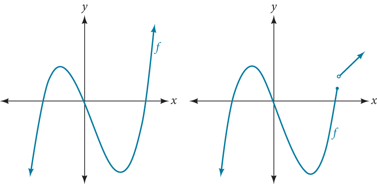
Recognizing Polynomial Functions
Which of the graphs in Figure 2 represents a polynomial function?
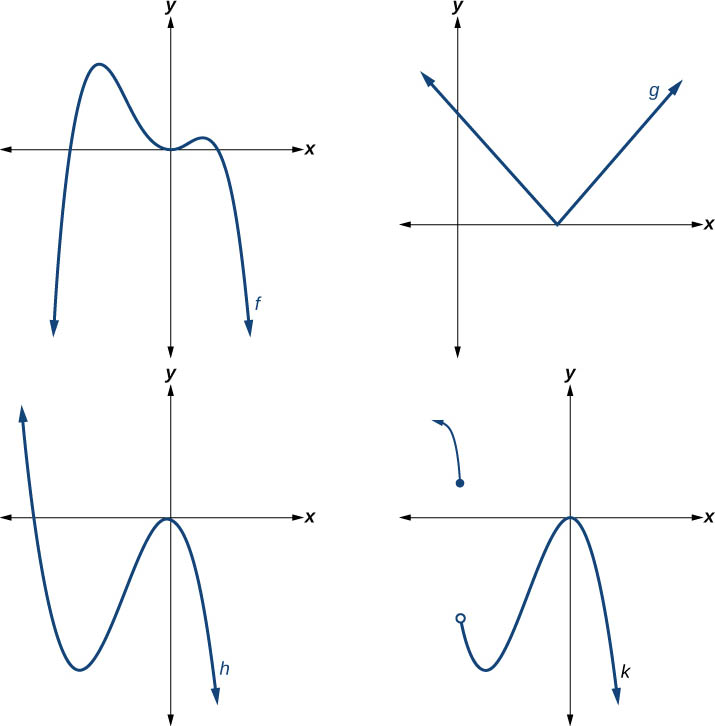
Solution
The graphs of and are graphs of polynomial functions. They are smooth and continuous.
The graphs of and are graphs of functions that are not polynomials. The graph of function has a sharp corner. The graph of function is not continuous.
Using Factoring to Find Zeros of Polynomial Functions
Recall that if is a polynomial function, the values of for which are called zeros of If the equation of the polynomial function can be factored, we can set each factor equal to zero and solve for the zeros.
We can use this method to find intercepts because at the intercepts we find the input values when the output value is zero. For general polynomials, this can be a challenging prospect. While quadratics can be solved using the relatively simple quadratic formula, the corresponding formulas for cubic and fourth-degree polynomials are not simple enough to remember, and formulas do not exist for general higher-degree polynomials. Consequently, we will limit ourselves to three cases in this section:
- The polynomial can be factored using known methods: greatest common factor and trinomial factoring.
- The polynomial is given in factored form.
- Technology is used to determine the intercepts.
Finding the x-Intercepts of a Polynomial Function by Factoring
Find the x-intercepts of
Solution
We can attempt to factor this polynomial to find solutions for
This gives us five intercepts: and See Figure 3. We can see that this is an even function.
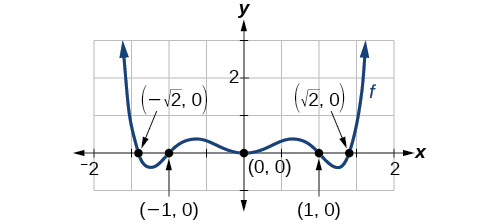
Finding the x-Intercepts of a Polynomial Function by Factoring
Find the intercepts of
Solution
Find solutions for
by factoring.
There are three intercepts: and See Figure 4.
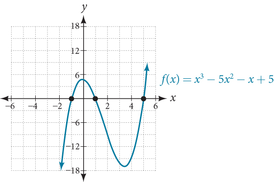
Finding the y- and x-Intercepts of a Polynomial in Factored Form
Find the and x-intercepts of
Solution
The y-intercept can be found by evaluating
So the y-intercept is
The x-intercepts can be found by solving
So the intercepts are and
Finding the x-Intercepts of a Polynomial Function Using a Graph
Find the intercepts of
Solution
This polynomial is not in factored form, has no common factors, and does not appear to be factorable using techniques previously discussed. Fortunately, we can use technology to find the intercepts. Keep in mind that some values make graphing difficult by hand. In these cases, we can take advantage of graphing utilities.
Looking at the graph of this function, as shown in Figure 6, it appears that there are x-intercepts at and
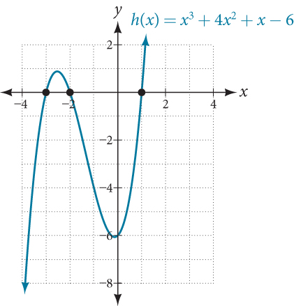
We can check whether these are correct by substituting these values for and verifying that
Since we have:
Each intercept corresponds to a zero of the polynomial function and each zero yields a factor, so we can now write the polynomial in factored form.
Identifying Zeros and Their Multiplicities
Graphs behave differently at various intercepts. Sometimes, the graph will cross over the horizontal axis at an intercept. Other times, the graph will touch the horizontal axis and bounce off.
Suppose, for example, we graph the function
Notice in Figure 7 that the behavior of the function at each of the intercepts is different.
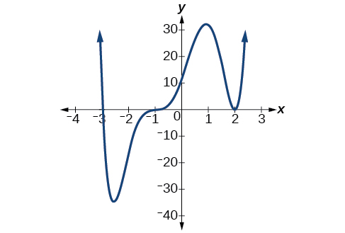
The intercept is the solution of equation The graph passes directly through the intercept at The factor is linear (has a degree of 1), so the behavior near the intercept is like that of a line—it passes directly through the intercept. We call this a single zero because the zero corresponds to a single factor of the function.
The intercept is the repeated solution of equation The graph touches the axis at the intercept and changes direction. The factor is quadratic (degree 2), so the behavior near the intercept is like that of a quadratic—it bounces off of the horizontal axis at the intercept.
The factor is repeated, that is, the factor appears twice. The number of times a given factor appears in the factored form of the equation of a polynomial is called the multiplicity. The zero associated with this factor, has multiplicity 2 because the factor occurs twice.
The intercept is the repeated solution of factor The graph passes through the axis at the intercept, but flattens out a bit first. This factor is cubic (degree 3), so the behavior near the intercept is like that of a cubic—with the same S-shape near the intercept as the toolkit function We call this a triple zero, or a zero with multiplicity 3.
For zeros with even multiplicities, the graphs touch or are tangent to the axis. For zeros with odd multiplicities, the graphs cross or intersect the axis. See Figure 8 for examples of graphs of polynomial functions with multiplicity 1, 2, and 3.
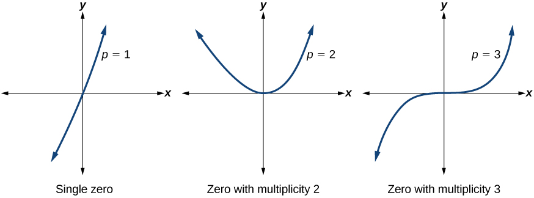
For higher even powers, such as 4, 6, and 8, the graph will still touch and bounce off of the horizontal axis but, for each increasing even power, the graph will appear flatter as it approaches and leaves the axis.
For higher odd powers, such as 5, 7, and 9, the graph will still cross through the horizontal axis, but for each increasing odd power, the graph will appear flatter as it approaches and leaves the axis.
Identifying Zeros and Their Multiplicities
Use the graph of the function of degree 6 in Figure 9 to identify the zeros of the function and their possible multiplicities.
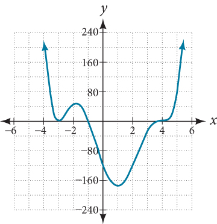
Solution
The polynomial function is of degree The sum of the multiplicities must be
Starting from the left, the first zero occurs at The graph touches the x-axis, so the multiplicity of the zero must be even. The zero of has multiplicity
The next zero occurs at The graph looks almost linear at this point. This is a single zero of multiplicity 1.
The last zero occurs at The graph crosses the x-axis, so the multiplicity of the zero must be odd. We know that the multiplicity is likely 3 and that the sum of the multiplicities is likely 6.
Determining End Behavior
As we have already learned, the behavior of a graph of a polynomial function of the form
will either ultimately rise or fall as increases without bound and will either rise or fall as decreases without bound. This is because for very large inputs, say 100 or 1,000, the leading term dominates the size of the output. The same is true for very small inputs, say –100 or –1,000.
Recall that we call this behavior the end behavior of a function. As we pointed out when discussing quadratic equations, when the leading term of a polynomial function, is an even power function, as increases or decreases without bound, increases without bound. When the leading term is an odd power function, as decreases without bound, also decreases without bound; as increases without bound, also increases without bound. If the leading term is negative, it will change the direction of the end behavior. Figure 11 summarizes all four cases.
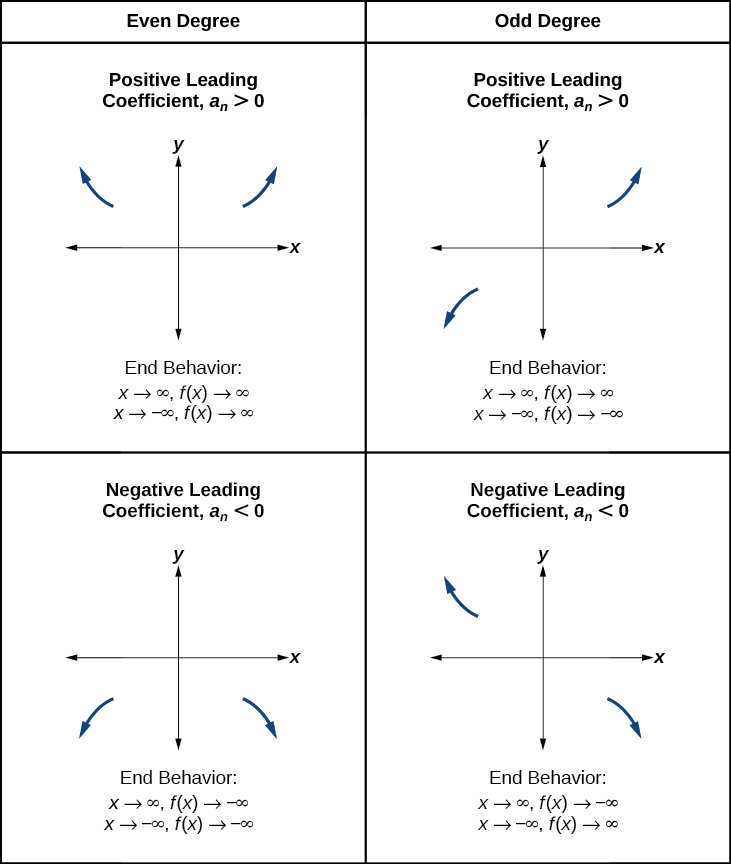
Understanding the Relationship between Degree and Turning Points
In addition to the end behavior, recall that we can analyze a polynomial function’s local behavior. It may have a turning point where the graph changes from increasing to decreasing (rising to falling) or decreasing to increasing (falling to rising). Look at the graph of the polynomial function in Figure 12. The graph has three turning points.
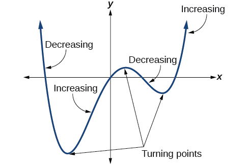
This function is a 4th degree polynomial function and has 3 turning points. The maximum number of turning points of a polynomial function is always one less than the degree of the function.
Finding the Maximum Number of Turning Points Using the Degree of a Polynomial Function
Find the maximum number of turning points of each polynomial function.
- ⓐ
- ⓑ
Solution
- ⓐ
First, rewrite the polynomial function in descending order:
Identify the degree of the polynomial function. This polynomial function is of degree 5.
The maximum number of turning points is
- ⓑ
First, identify the leading term of the polynomial function if the function were expanded.
Then, identify the degree of the polynomial function. This polynomial function is of degree 4.
The maximum number of turning points is
Graphing Polynomial Functions
We can use what we have learned about multiplicities, end behavior, and turning points to sketch graphs of polynomial functions. Let us put this all together and look at the steps required to graph polynomial functions.
Sketching the Graph of a Polynomial Function
Sketch a graph of
Solution
This graph has two intercepts. At the factor is squared, indicating a multiplicity of 2. The graph will bounce at this intercept. At the function has a multiplicity of one, indicating the graph will cross through the axis at this intercept.
The y-intercept is found by evaluating
The intercept is
Additionally, we can see the leading term, if this polynomial were multiplied out, would be so the end behavior is that of a vertically reflected cubic, with the outputs decreasing as the inputs approach infinity, and the outputs increasing as the inputs approach negative infinity. See Figure 13.
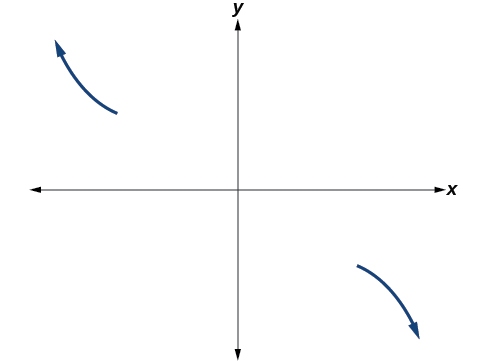
To sketch this, we consider that:
- As the function so we know the graph starts in the second quadrant and is decreasing toward the axis.
- Since is not equal to the graph does not display symmetry.
- At
the graph bounces off of the axis, so the function must start increasing.
At the graph crosses the axis at the intercept. See Figure 14.
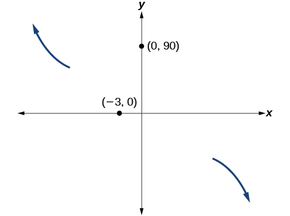
Somewhere after this point, the graph must turn back down or start decreasing toward the horizontal axis because the graph passes through the next intercept at See Figure 15.
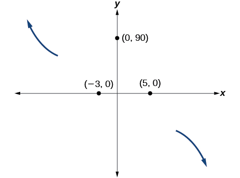
As the function so we know the graph continues to decrease, and we can stop drawing the graph in the fourth quadrant.
Using technology, we can create the graph for the polynomial function, shown in Figure 16, and verify that the resulting graph looks like our sketch in Figure 15.
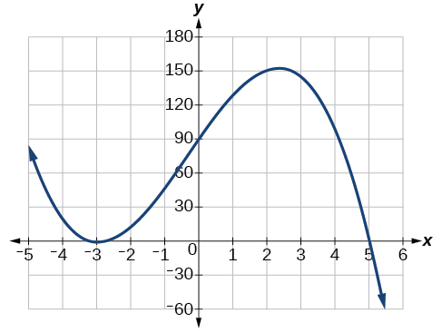
Using the Intermediate Value Theorem
In some situations, we may know two points on a graph but not the zeros. If those two points are on opposite sides of the x-axis, we can confirm that there is a zero between them. Consider a polynomial function whose graph is smooth and continuous. The Intermediate Value Theorem states that for two numbers and in the domain of if and then the function takes on every value between and We can apply this theorem to a special case that is useful in graphing polynomial functions. If a point on the graph of a continuous function at lies above the axis and another point at lies below the axis, there must exist a third point between and where the graph crosses the axis. Call this point This means that we are assured there is a solution where
In other words, the Intermediate Value Theorem tells us that when a polynomial function changes from a negative value to a positive value, the function must cross the axis. Figure 17 shows that there is a zero between and
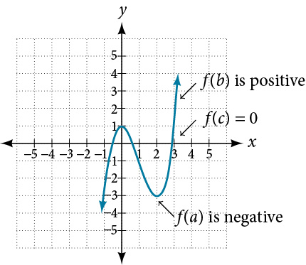
Using the Intermediate Value Theorem
Show that the function has at least two real zeros between and
Solution
As a start, evaluate at the integer values See Table 2.
| 1 | 2 | 3 | 4 | |
| 5 | 0 | –3 | 2 |
We see that one zero occurs at Also, since is negative and is positive, by the Intermediate Value Theorem, there must be at least one real zero between 3 and 4.
We have shown that there are at least two real zeros between and
Analysis
We can also see on the graph of the function in Figure 18 that there are two real zeros between and
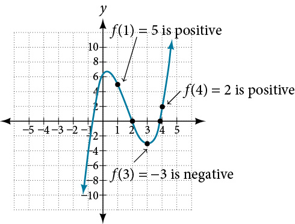
Writing Formulas for Polynomial Functions
Now that we know how to find zeros of polynomial functions, we can use them to write formulas based on graphs. Because a polynomial function written in factored form will have an intercept where each factor is equal to zero, we can form a function that will pass through a set of intercepts by introducing a corresponding set of factors.
Writing a Formula for a Polynomial Function from the Graph
Write a formula for the polynomial function shown in Figure 19.
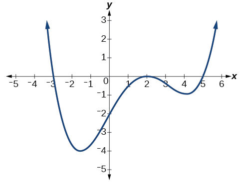
Solution
This graph has three intercepts: and The intercept is located at At and the graph passes through the axis linearly, suggesting the corresponding factors of the polynomial will be linear. At the graph bounces at the intercept, suggesting the corresponding factor of the polynomial will be second degree (quadratic). Together, this gives us
To determine the stretch factor, we utilize another point on the graph. We will use the intercept to solve for
The graphed polynomial appears to represent the function
Using Local and Global Extrema
With quadratics, we were able to algebraically find the maximum or minimum value of the function by finding the vertex. For general polynomials, finding these turning points is not possible without more advanced techniques from calculus. Even then, finding where extrema occur can still be algebraically challenging. For now, we will estimate the locations of turning points using technology to generate a graph.
Each turning point represents a local minimum or maximum. Sometimes, a turning point is the highest or lowest point on the entire graph. In these cases, we say that the turning point is a global maximum or a global minimum. These are also referred to as the absolute maximum and absolute minimum values of the function.
Using Local Extrema to Solve Applications
An open-top box is to be constructed by cutting out squares from each corner of a 14 cm by 20 cm sheet of plastic then folding up the sides. Find the size of squares that should be cut out to maximize the volume enclosed by the box.
Solution
We will start this problem by drawing a picture like that in Figure 22, labeling the width of the cut-out squares with a variable,
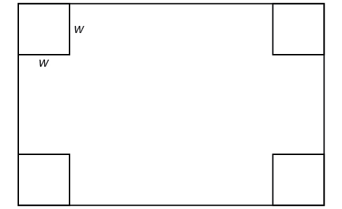
Notice that after a square is cut out from each end, it leaves a cm by cm rectangle for the base of the box, and the box will be cm tall. This gives the volume
Notice, since the factors are and the three zeros are 10, 7, and 0, respectively. Because a height of 0 cm is not reasonable, we consider the only the zeros 10 and 7. The shortest side is 14 and we are cutting off two squares, so values may take on are greater than zero or less than 7. This means we will restrict the domain of this function to Using technology to sketch the graph of on this reasonable domain, we get a graph like that in Figure 23. We can use this graph to estimate the maximum value for the volume, restricted to values for that are reasonable for this problem—values from 0 to 7.
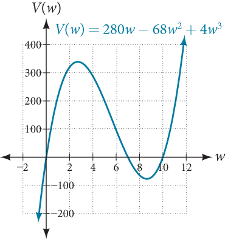
From this graph, we turn our focus to only the portion on the reasonable domain, We can estimate the maximum value to be around 340 cubic cm, which occurs when the squares are about 2.75 cm on each side. To improve this estimate, we could use advanced features of our technology, if available, or simply change our window to zoom in on our graph to produce Figure 24.
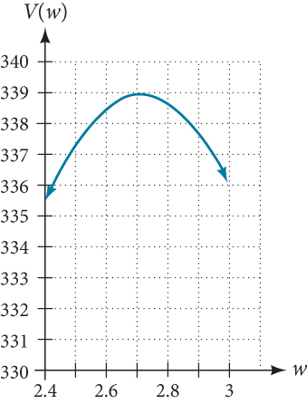
From this zoomed-in view, we can refine our estimate for the maximum volume to about 339 cubic cm, when the squares measure approximately 2.7 cm on each side.
Key Concepts
- Polynomial functions of degree 2 or more are smooth, continuous functions. See Example 1.
- To find the zeros of a polynomial function, if it can be factored, factor the function and set each factor equal to zero. See Example 2, Example 3, and Example 4.
- Another way to find the intercepts of a polynomial function is to graph the function and identify the points at which the graph crosses the axis. See Example 5.
- The multiplicity of a zero determines how the graph behaves at the intercepts. See Example 6.
- The graph of a polynomial will cross the horizontal axis at a zero with odd multiplicity.
- The graph of a polynomial will touch the horizontal axis at a zero with even multiplicity.
- The end behavior of a polynomial function depends on the leading term.
- The graph of a polynomial function changes direction at its turning points.
- A polynomial function of degree has at most turning points. See Example 7.
- To graph polynomial functions, find the zeros and their multiplicities, determine the end behavior, and ensure that the final graph has at most turning points. See Example 8 and Example 10.
- Graphing a polynomial function helps to estimate local and global extremas. See Example 11.
- The Intermediate Value Theorem tells us that if have opposite signs, then there exists at least one value between and for which See Example 9.
Section Exercises
Verbal
What is the difference between an intercept and a zero of a polynomial function
Solution
The intercept is where the graph of the function crosses the axis, and the zero of the function is the input value for which
If a polynomial function of degree has distinct zeros, what do you know about the graph of the function?
Explain how the Intermediate Value Theorem can assist us in finding a zero of a function.
Solution
If we evaluate the function at and at and the sign of the function value changes, then we know a zero exists between and
Explain how the factored form of the polynomial helps us in graphing it.
If the graph of a polynomial just touches the axis and then changes direction, what can we conclude about the factored form of the polynomial?
Solution
There will be a factor raised to an even power.
Algebraic
For the following exercises, find the or t-intercepts of the polynomial functions.
Solution
Solution
Solution
Solution
Solution
Solution
Solution
Solution
Solution
, , , ,
For the following exercises, use the Intermediate Value Theorem to confirm that the given polynomial has at least one zero within the given interval.
between and
between and
Solution
and Sign change confirms.
between and
between and .
Solution
and Sign change confirms.
between and
between and
Solution
and Sign change confirms.
For the following exercises, find the zeros and give the multiplicity of each.
Solution
0 with multiplicity 2, with multiplicity 5, 4 with multiplicity 2
Solution
0 with multiplicity 2, –2 with multiplicity 2
Solution
with multiplicity with multiplicity
Solution
with multiplicity with multiplicity with multiplicity
Solution
with multiplicity 2, 0 with multiplicity 3
Solution
with multiplicity with multiplicity
Graphical
For the following exercises, graph the polynomial functions. Note and intercepts, multiplicity, and end behavior.
Solution
x-intercepts, with multiplicity 2, with multiplicity 1, intercept . As , , as , .
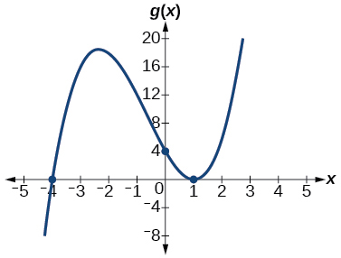
Solution
x-intercepts with multiplicity 3, with multiplicity 2, intercept . As , , as ,
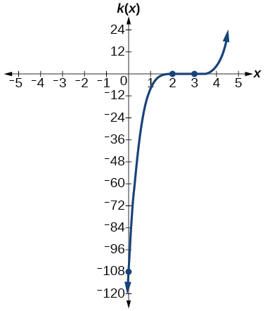
Solution
x-intercepts with multiplicity 1, -intercept As , , as ,
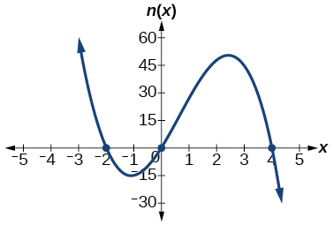
For the following exercises, use the graphs to write the formula for a polynomial function of least degree.
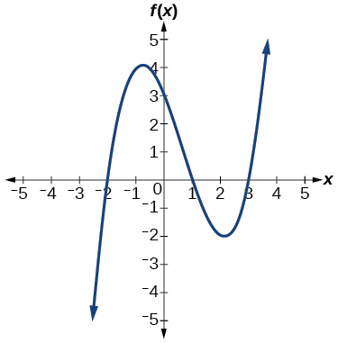
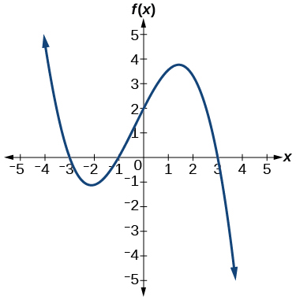
Solution
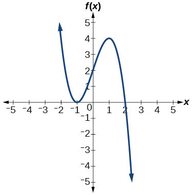
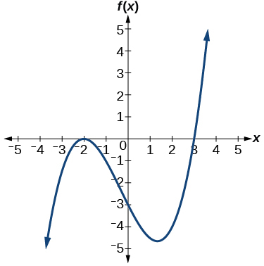
Solution
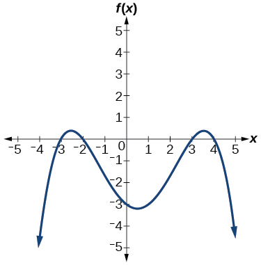
For the following exercises, use the graph to identify zeros and multiplicity.
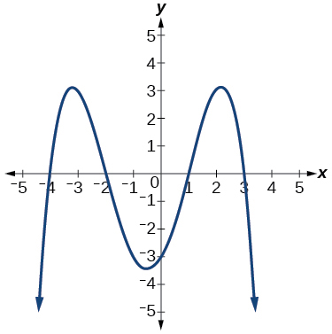
Solution
–4, –2, 1, 3 with multiplicity 1
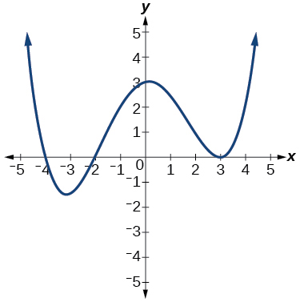
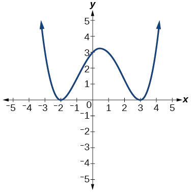
Solution
–2, 3 each with multiplicity 2
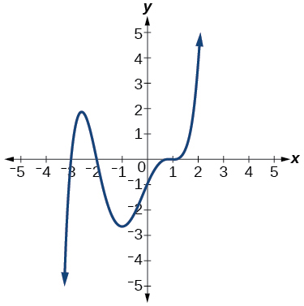
For the following exercises, use the given information about the polynomial graph to write the equation.
Degree 3. Zeros at and y-intercept at
Solution
Degree 3. Zeros at and y-intercept at
Degree 5. Roots of multiplicity 2 at and , and a root of multiplicity 1 at y-intercept at
Solution
Degree 4. Root of multiplicity 2 at and a roots of multiplicity 1 at and y-intercept at
Degree 5. Double zero at and triple zero at Passes through the point
Solution
Degree 3. Zeros at and y-intercept at
Degree 3. Zeros at and y-intercept at
Solution
Degree 5. Roots of multiplicity 2 at and and a root of multiplicity 1 at
y-intercept at
Degree 4. Roots of multiplicity 2 at and roots of multiplicity 1 at and
y-intercept at
Solution
Double zero at and triple zero at Passes through the point
Technology
For the following exercises, use a calculator to approximate local minima and maxima or the global minimum and maximum.
Solution
local max local min
Solution
global min
Solution
global min
Extensions
For the following exercises, use the graphs to write a polynomial function of least degree.
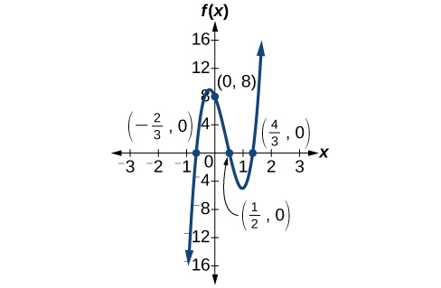
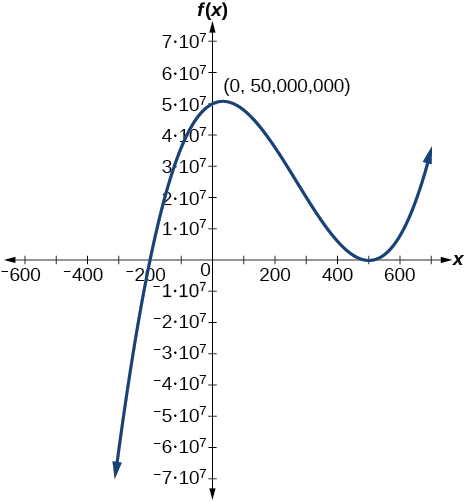
Solution
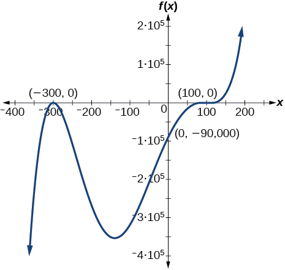
Real-World Applications
For the following exercises, write the polynomial function that models the given situation.
A rectangle has a length of 10 units and a width of 8 units. Squares of by units are cut out of each corner, and then the sides are folded up to create an open box. Express the volume of the box as a polynomial function in terms of
Solution
Consider the same rectangle of the preceding problem. Squares of by units are cut out of each corner. Express the volume of the box as a polynomial in terms of
A square has sides of 12 units. Squares by units are cut out of each corner, and then the sides are folded up to create an open box. Express the volume of the box as a function in terms of
Solution
A cylinder has a radius of units and a height of 3 units greater. Express the volume of the cylinder as a polynomial function.
A right circular cone has a radius of and a height 3 units less. Express the volume of the cone as a polynomial function. The volume of a cone is for radius and height
Solution
Analysis
We can always check that our answers are reasonable by using a graphing calculator to graph the polynomial as shown in Figure 5.
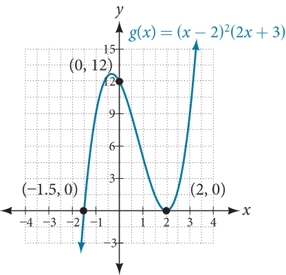